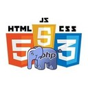
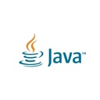

Личные данные
- ФИО: Абжаппаров Максат Темирханович
- Эл. почта: abzhapparovmaxat@gmail.com
- Тел.: +7 705 191 8060
Цели
|
1) Стать специалистом в сфере веб-програмирования, к которой я уже иду, но этот путь без наставника словно путь в темном гараже с разложенными на полу граблями. Идешь быстро - совершишь ошибку, наступая на грабли. Не желая наступить на грабли - идешь медленно. Наставник же это фонарь в руке, с которым можно идти быстро и без ошибок. 2) Получать деньги за то, что мне нравится делать. Из чего следует независимость от других дел, что позволить мне еще больше делать то, что нравится. |
Выберите себе работу по душе, и вам не придется работать ни одного дня в своей жизни. © Конфуций
Опыт в программировании
|  |
Решение тривиальных задач: PHP, HTM5/CSS/JS(jQuery). Создание простых сайтов. От дизайна и верстки до создание простого CMS.
|
|  |
Решение тривиальных задач: JAVA. Создание простых приложений для Android.
|
Javascript
Фрагмент кода с сайта Централизованной Библиотечной Системы города Каражал
String.prototype.replaceAll = function(a,b) { return this.split(a).join(b) };
var transliteLat = {
А: "A", а: "a",
Ә: "Á", ә: "á",
Б: "B", б: "b",
Д: "D", д: "d",
Е: "E", е: "e",
Ф: "F", ф: "f",
"Ғ": "Ǵ", "ғ": "ǵ",
Г: "G", г: "g",
Х: "H", х: "h",
І: "I", i: "i",
І: "I", i: "i",
И: "I", и: "ı",
Й: "I", й: "ı",
H: "H", h: "h",
Ж: "J", ж: "j",
К: "K", к: "k",
Л: "L", л: "l",
М: "M", м: "m",
Н: "N", н: "n",
Ң: "Ń", ң: "ń",
О: "O", о: "o",
Ө: "Ó", ө: "ó",
П: "P", п: "p",
Қ: "Q", қ: "q",
Р: "R", р: "r",
Ш: "Sh", ш: "sh",
С: "S", с: "s",
Т: "T", т: "t",
Ұ: "U", ұ: "u",
Ү: "Ú", ү: "ú",
В: "V", в: "v",
Ы: "Y", ы: "y",
У: "Ý", у: "ý",
З: "Z", з: "z",
Ч: "Ch", ч: "ch",
Э: "E", э: "e",
Щ: "", щ: "",
ь: '',
ъ:'',
};
var transliteKaz = {
"Á": "Ә", "á": "ә",
"A": "А", "a": "а",
"B": "Б", "b": "б",
"D": "Д", "d": "д",
"E": "Е", "e": "е",
"F": "Ф", "f": "ф",
"Ǵ": "Ғ", "ǵ": "ғ",
"G": "Г", "g": "г",
"H": "Х", "h": "х",
"I": "І", "i": "i",
"I": "І", "i": "i",
"I": "Й", "ı": "й",
"I": "И", "ı": "и",
"H": "H", "h": "h",
"J": "Ж", "j": "ж",
"K": "К", "k": "к",
"L": "Л", "l": "л",
"M": "М", "m": "м",
"Ń": "Ң", "ń": "ң",
"N": "Н", "n": "н",
"Ó": "Ө", "ó": "ө",
"O": "О", "o": "о",
"P": "П", "p": "п",
"Q": "Қ", "q": "қ",
"R": "Р", "r": "р",
"Sh": "Ш" "sh": "ш",
"S": "С", "s": "с",
"T": "Т", "t": "т",
"Ú": "Ү", "ú": "ү",
"U": "Ұ", "u": "ұ",
"V": "В", "v": "в",
"Ý": "У", "ý": "у",
"Z": "З", "z": "з",
"Ch": "Ч", "ch": "ч",
"Y": "Ы", "y": "ы",
"": "Щ", "": "щ"
};
var transliteKaz2 = {
"Iá": "Иә", "ıá": "иә",
"Ia": "Я", "ıa": "я",
"Iý": "Ю", "ıý": "ю",
};
var transliteLat2 = {
Я: "Ia", я: "ıa",
Ю: "Iý", ю: "ıý",
Ц: "Ts", ц: "ts"
};
var convertToLat = function (text) {
for (var key in transliteLat2) {
text = text.replaceAll(key.toString(), transliteLat2[key]);
}
for (key in transliteLat) {
text = text.replaceAll(key.toString(), transliteLat[key]);
}
return text;
};
var convertToKaz = function (text) {
for (var key in transliteKaz2) {
text = text.replaceAll(key.toString(), transliteKaz2[key]);
}
for (key in transliteKaz) {
text = text.replaceAll(key.toString(), transliteKaz[key]);
}
return text;
};
Java
Фрагмент кода из проекта YOTAPHONE 2: 1000 английских слов (виджет)
public String Words(int row, String field) {
String field_value = "";
AssetDatabaseOpenHelper adoh = new AssetDatabaseOpenHelper(context);
SQLiteDatabase sqlite_database = adoh.openDatabase();
Cursor cursor = sqlite_database.rawQuery("SELECT " + field + " FROM englishwords WHERE rowid=" + row, null);
cursor.moveToFirst();
field_value = cursor.getString(0);
return field_value;
}
public Void UpdateWord(RemoteViews rv, ComponentName cn, AppWidgetManager awp) {
try {
Random random = new Random();
int r = random.nextInt(1079)+1;
rv.setTextViewText(R.id.word, Words(r, "word") + " " + Words(r, "transcription"));
rv.setTextViewText(R.id.translation, Words(r, "translation"));
rv.setTextViewText(R.id.example, Words(r, "example"));
awp.updateAppWidget(cn, rv);
Epd.fullUpdate(rv, R.id.widget);
} catch (Error e) {
e.printStackTrace();
return null;
} catch (Exception e) {
e.printStackTrace();
return null;
}
return null;
}
Образование
Незаконченный курс по специальности Программирование в 2008. С 2015 продолжил обучение самостоятельно.
В 2017 окончил курс Колледжа экономики, бизнеса и права (КЭУК) по специальности Финансы (по отраслям).
Знание английского
A1 (Beginner) Чтение разного рода инструкций со дня знакомства с компьютером (~2000 год), переписка на зарубежных форумах с тех пор как программирование стало моим хобби (~2015 год).